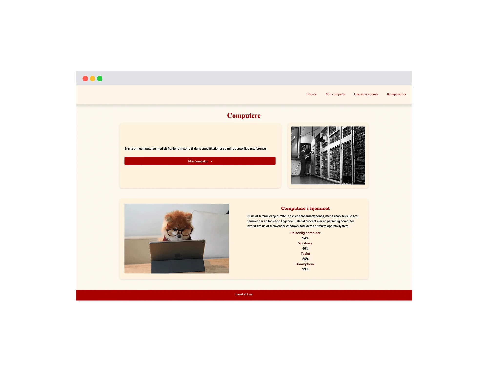
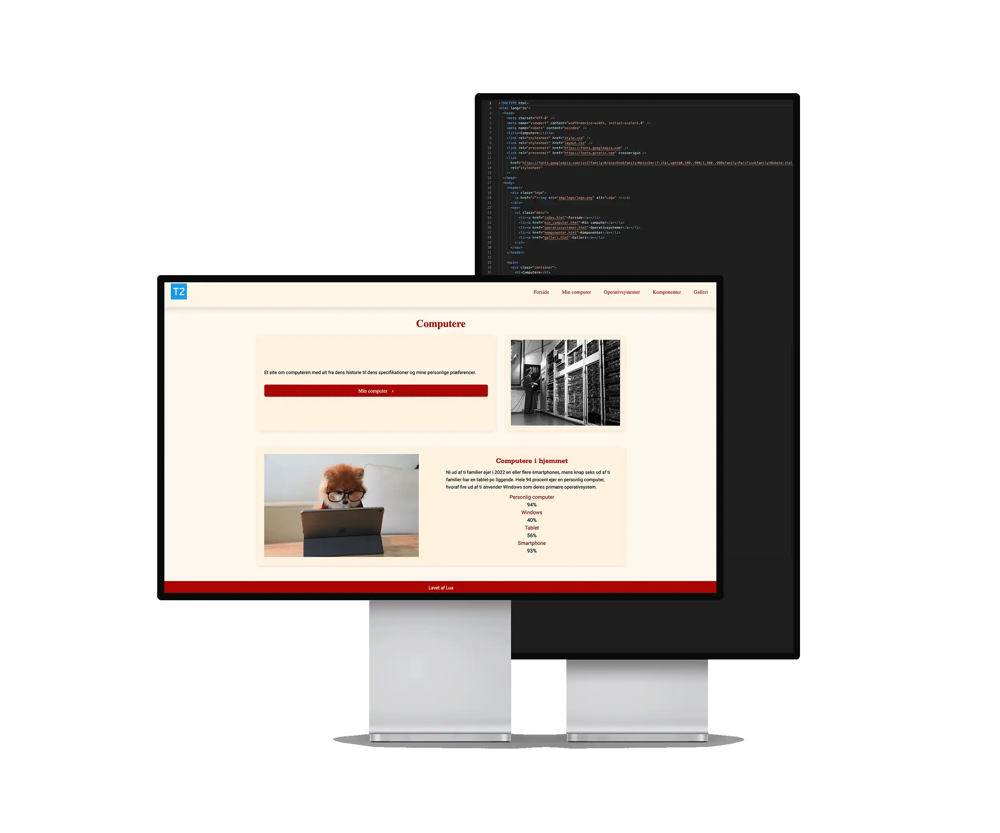
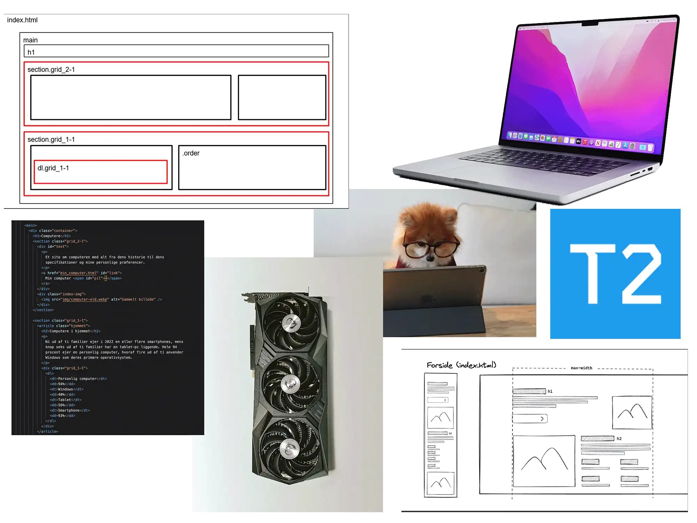
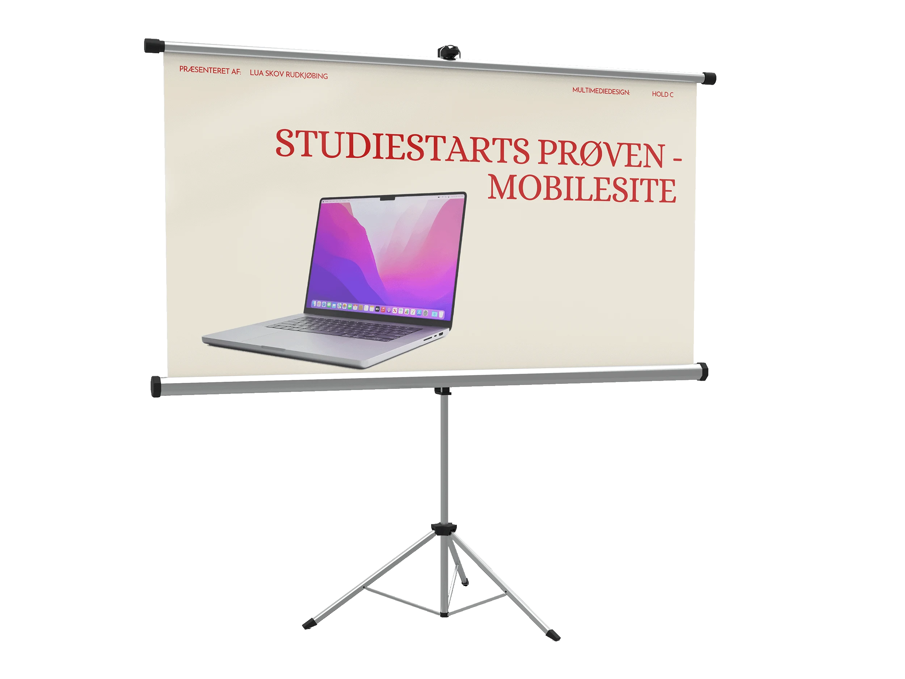

Mobilesite - studiestarts prøven
Se hjemmesiden her
Opgave:
Opgaven var at videreudvikle på et mobilesite som vi havde lavet, så det også fungerede optimalt på desktop.
Løsning:
Jeg har udviklet en desktop website med det udleverede indhold og den fastlagte struktur, ud fra det eksisterende mobil layout. Farvepaletten er holdt enkel med beige og rolige baggrundsfarver for at skabe overblik og ro i et teksttungt layout. Overskrifter og udvalgte elementer er fremhævet med røde farver for at skabe blikfang og tydelig hierarki. Derudover er der anvendt bløde kanter på elementerne for at understøtte et roligt og behageligt visuelt udtryk.

Proces:
Jeg havde downloadet det udleverede materiale, herunder tekst, billedindhold og layoutdiagram, som fungerede som grundlag for opgaven. Herefter begyndte jeg at kode websitet i desktopformat, hvor jeg placerede indholdet på de forskellige sider og prøvede at organisere det i de angivne gridstrukturer. Da layout og struktur var så godt som jeg kunne, arbejdede jeg videre med det visuelle udtryk og eksperimenterede med farver, indtil jeg nåede frem til den endelige farvepalette, som understøttede sidens indhold og formål.

Feedback og refleksion:
I perioden var jeg syg og gik glip af noget undervisning, hvilket gjorde, at jeg kom bagud og manglede overblik over opgaven. Det gav udfordringer med at følge layoutdiagrammet og skabe et konsekvent visuelt resultat. Studiestartsprøven blev bestået, men feedbacken pegede på flere tekniske og strukturelle mangler, herunder manglende general.css, afvigelser fra layoutdiagram og wireframes, fejl i galleri-layout på mobil og desktop samt manglende billeder og korrekte alt-attributter. Forløbet har tydeliggjort vigtigheden af bedre planlægning, struktur og løbende opfølgning i udviklingsarbejdet.
Læring:
Gennem denne opgave har jeg opnået erfaring med opbygning af grid skabeloner, som danner et struktureret grundlag for kodning layoutet. Jeg har arbejdet med typografi og fået forståelse for, hvordan tekstopsætning/hirakiet påvirker brugeroplevelsen. Opgaven har styrket min viden om grundlæggende designprincipper og webdesign gennem brug af HTML og CSS. Derudover har jeg opnået erfaring med HTML og CSS validering samt indsigt i anvendelse af billedformater til web og betydningen af korrekt struktur og semantisk markup i udviklingen af brugergrænseflader.
